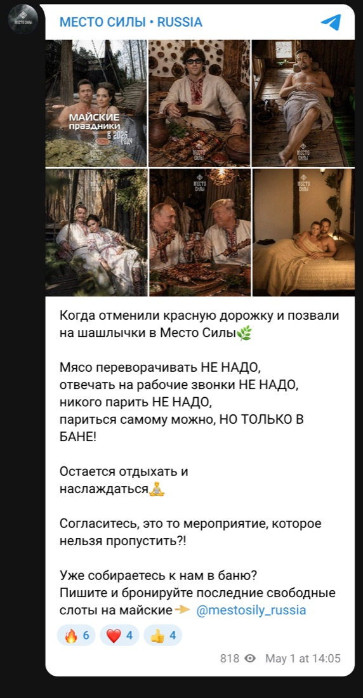
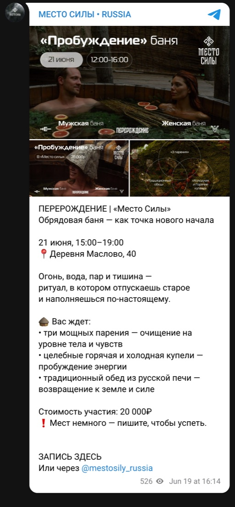
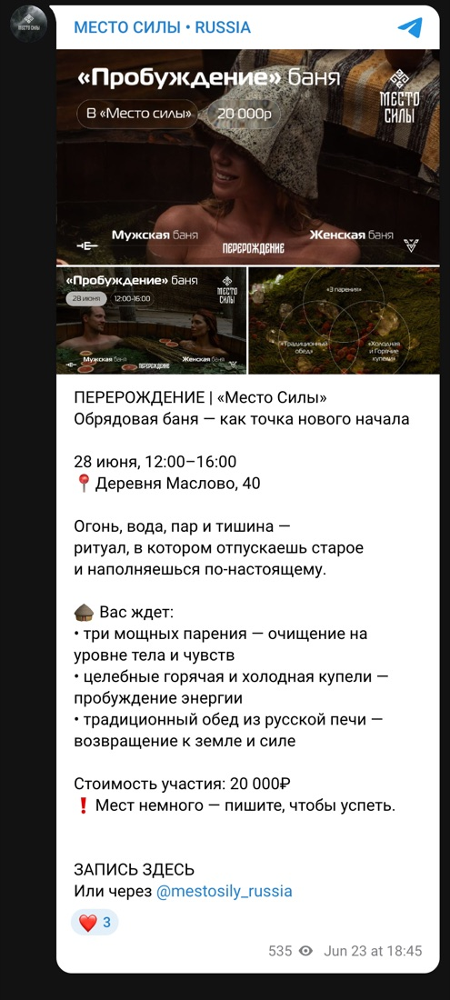
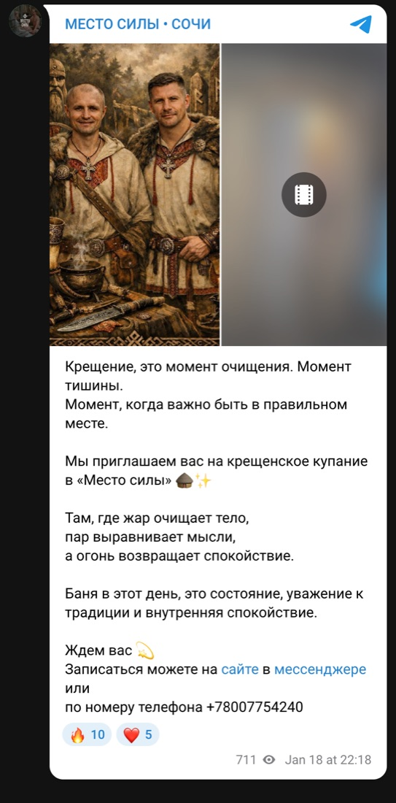
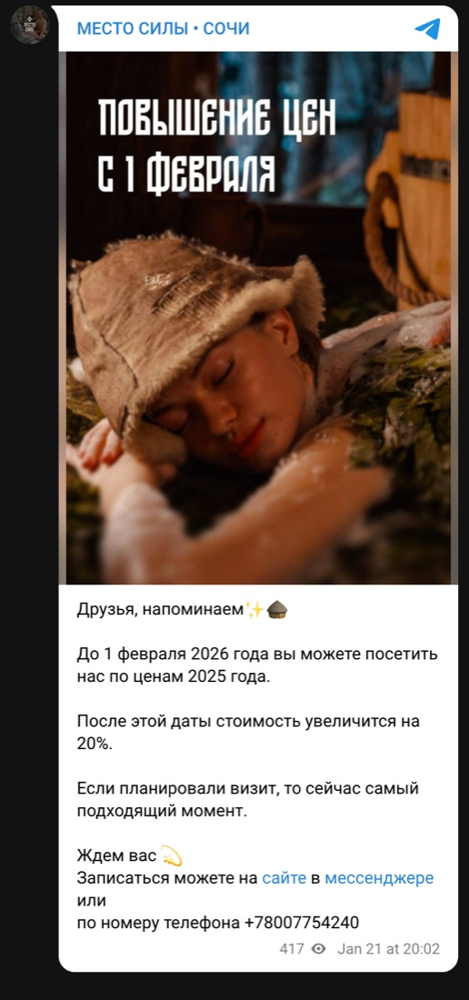
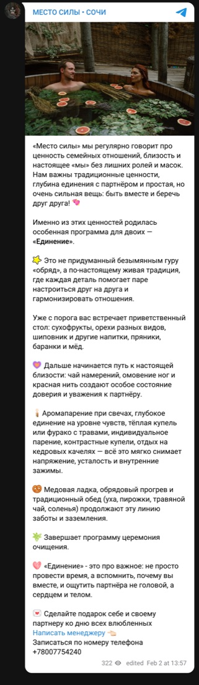
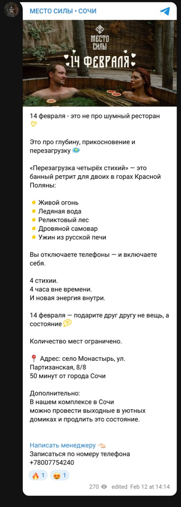
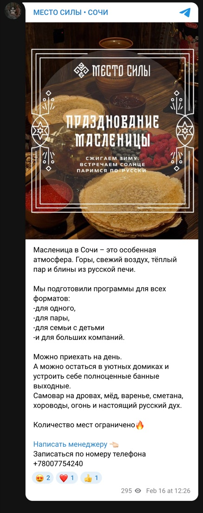

Регулярные посты для двух каналов банного пространства «Место Силы»: «МЕСТО СИЛЫ • RUSSIA» и «МЕСТО СИЛЫ • СОЧИ». Обложки постов, анонсы программ и событий, акции и изменения цен — в едином стиле бренда.








Напишите в Telegram: расскажу, с чего начать и сколько это займёт.
Написать @Freezecatcrazy